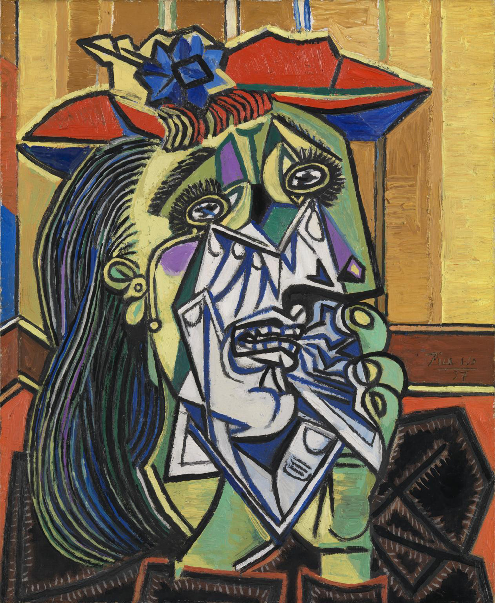
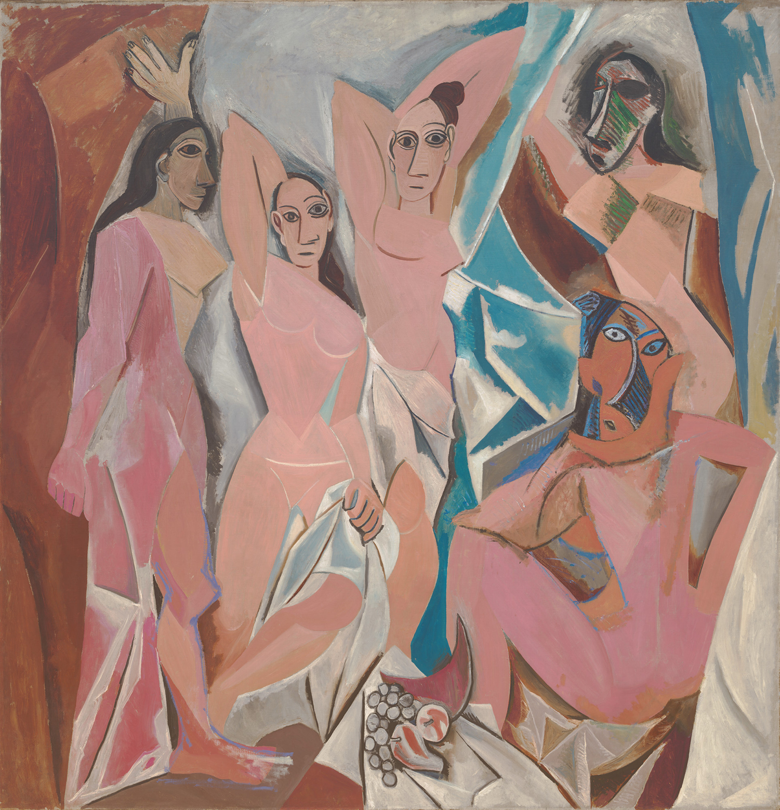
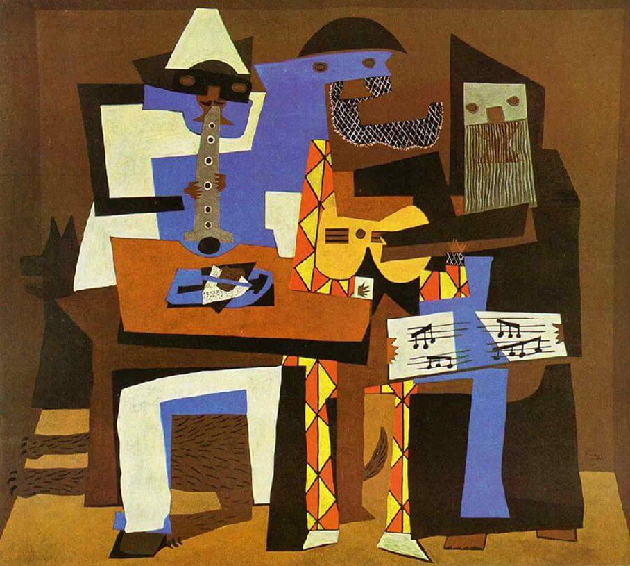
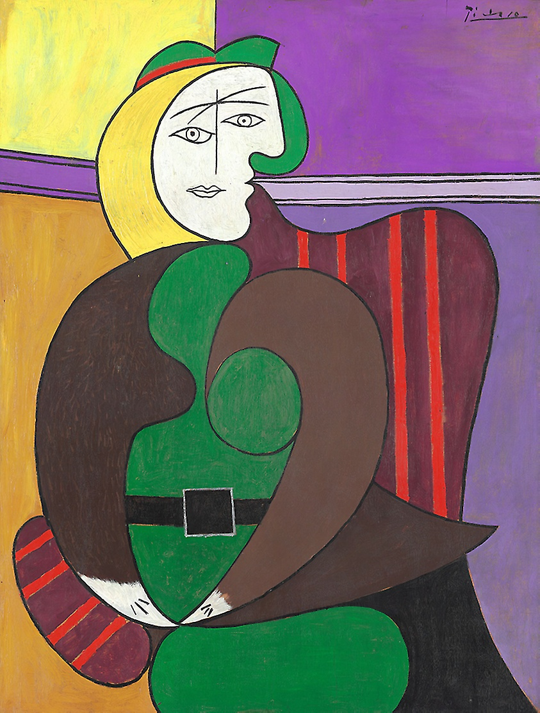

As a significant influence on 20th-century art, Pablo Picasso was an innovative artist who experimented and innovated during his 92-plus years on earth. He was not only a master painter but also a sculptor, printmaker, ceramics artist, etching artist and writer. His work matured from the naturalism of his childhood through Cubism, Surrealism and beyond, shaping the direction of modern and contemporary art through the decades. Picasso lived through two World Wars, sired four children, appeared in films and wrote poetry.
Art Gallery





×